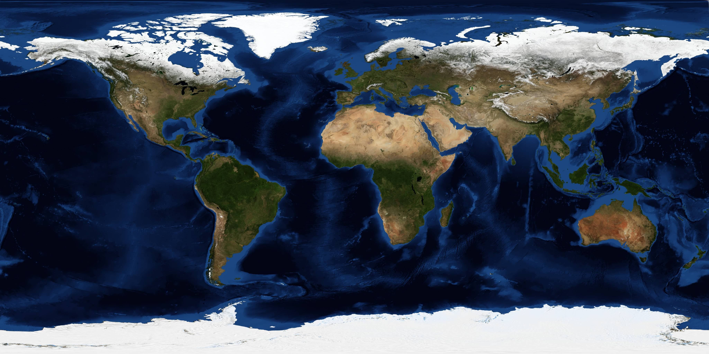
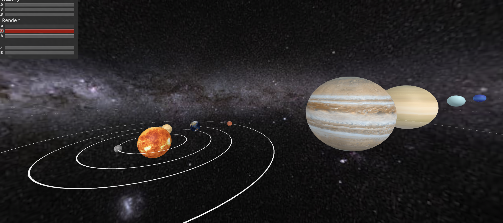

テクスチャ画像を用意する
太陽と惑星のテクスチャ画像はassetsフォルダに入っています。本研修では、NASAが提供する画像を使用します。


こちらの画像を下記のようにa-assetsタグを使って読み込みます。
<a-assets>
<img id="skyTexture" src="assets/milkyway.jpg"> <!-- 銀河系の画像 -->
<img id="earthTexture" src="assets/earth.jpg"> <!-- 地球の画像 -->
<img id="sunTexture" src="assets/sun.jpg"> <!-- 太陽の画像 -->
<img id="mercuryTexture" src="assets/mercury.jpg"> <!-- 水星の画像 -->
<img id="venusTexture" src="assets/venus.jpg"> <!-- 金星の画像 -->
<img id="marsTexture" src="assets/mars.jpg"> <!-- 火星の画像 -->
<img id="jupyterTexture" src="assets/jupiter.jpg"> <!-- 木製の画像 -->
<img id="saturnTexture" src="assets/saturn.jpg"> <!-- 土星の画像 -->
<img id="uranusTexture" src="assets/uranus.jpg"> <!-- 天王星の画像 -->
<img id="neptuneTexture" src="assets/neptune.jpg"> <!-- 海王星の画像 -->
</a-assets>
各画像はidが設定されて, それを使ってプログラム内で参照できます。例えば、太陽のテクスチャ画像はsunTextureというidで参照できます。
上記のコードをtaiyokei.htmlファイルのa-sceneタグ内に追加してください。
背景画像を設定する
次に、太陽系の背景を銀河系の画像(skyTexture)をa-skyタグを使って設定します。背景画像はsrc属性で指定します。
<a-sky src="#skyTexture"></a-sky>
太陽モデルを作成する
次に、太陽のモデルをa-sphereタグで作ります。太陽は半径が3の球体として表現し、テクスチャ画像はsunTextureを使って貼り付けます。更に、animation属性を使って自転アニメーションを追加します。
<a-sphere position="-2 -5 -15" radius="3" src="#sunTexture" animation="property: rotation; to: 0 360 0; loop:true;dur: 10000"; easing: linear"></a-sphere>
animation属性の詳細
| 属性 | 説明 | 記述例 |
|---|---|---|
| property | アニメーションの種類（回転，平行移動など） | property: rotation |
| to | アニメーション終了時のターゲット値 | to: 0 360 0 |
| loop | アニメーションを繰り返す回数 true: ずっと 繰り返す | loop: true |
| dur | アニメーションの持続時間（ミリ秒） | dur: 10000 |
| easing | アニメーションのイージング関数 | easing: linear |
太陽の自転周期をミリ秒単位でdur属性を使って設定できます。上記の例では10秒間で1回転するように設定しています。ここまでで太陽のモデルが完成しました。taiyokei.htmlファイルを保存して、太陽が自転していることを確認してみましょう。
地球を追加する
次に、地球を追加していきます。地球のモデルも太陽と同様にa-sphereタグを使って作成します。ただし、地球は太陽を中心に回るため、自転に加えて公転も再現する必要があります。そのため，下記のようにa-entityタグを使って各惑星をa-sphereタグで囲んで実現します。
<a-entity
position="-2 -5 -15"
animation="property: rotation; to: 0 360 0; loop: true; dur: 365000; easing: linear">
<a-sphere
position="10 0 0"
radius="1"
src="#earthTexture"
animation="property: rotation; to: 0 360 0; loop: true; dur: 1000; easing: linear" >
</a-sphere>
</a-entity>
上記のコードでは，a-entityタグで地球の公転軌道を定義し、その中にa-sphereタグで地球を配置しています。公転のアニメーションはa-entityタグに設定し、地球の自転のアニメーションはa-sphereタグに設定しています。
公転の設定（a-entityタグ）
| 属性 | 説明 | 記述例 |
|---|---|---|
| position | 公転の中心（太陽）の位置を設定する | position="-2 -5 -15" |
| animation | 公転アニメーションを設定する（公転周期はdur属性で設定） | animation="property: rotation; to: 0 360 0; loop: true; dur: 365000; easing: linear" |
自転の設定（a-sphereタグ）
| 属性 | 説明 | 記述例 |
|---|---|---|
| position | 地球の初期位置を設定する | position="10 0 0" |
| radius | 地球の半径を設定する | radius="1" |
| src | 地球のテクスチャ画像を設定する | src="#earthTexture" |
| animation | 自転アニメーションを設定する（自転周期はdur属性で設定） | animation="property: rotation; to: 0 360 0; loop: true; dur: 10000; easing: linear" |
上記のコードをtaiyokei.htmlファイルに追加して、地球の公転と自転を確認してみましょう。
<a-ring
position="-2 -5 -15"
color="white"
rotation="-90 0 0"
radius-inner="10"
radius-outer="10.1"
roughness="0"
segments-phi="100"
segments-theta="100">
</a-ring>
軌道の設定（a-ringタグ）
| 属性 | 説明 | 記述例 |
|---|---|---|
| position | 軌道の中心（太陽の位置） | position="-2 -5 -15" |
| color | 軌道の色を設定する | color="white" |
| rotation | 回転を設定する | rotation="-90 0 0" |
| radius-inner | 内半径を設定する（地球から太陽までの距離） | radius-inner="10" |
| radius-outer | 外半径を設定する（地球から太陽までの距離+0.1） | radius-outer="10.1" |
| roughness | 表面の粗さを設定する | roughness="0" |
| segments-phi | 円形を近似する多角形の分割数（赤道方向） | segments-phi="100" |
| segments-theta | 円形を近似する多角形の分割数（極方向） | segments-theta="100" |
軌道の内半径（radius-inner）は地球から太陽までの距離で設定し、外半径（radius-outer）は地球から太陽までの距離+0.1で設定します。
上記のコードをtaiyokei.htmlファイルに追加して、地球の軌道を確認してみましょう。
第5章: 他の惑星を追加する
下記の表は、地球のデータを基準にした太陽系の他の惑星の情報を示しています。これらのデータを使って、他の惑星も同様に追加していきますしょう。
| 惑星名 | 半径 | テクスチャ画像 | 位置 | 公転周期 | 自転周期 | 軌道の内半径 | 軌道の外半径 |
|---|---|---|---|---|---|---|---|
| 地球 | 1 | earthTexture | 0 0 10 | 365000 | 1000 | 10.0 | 10.1 |
| 水星 | 0.4 | mercuryTexture | 0 0 3.9 | 87965 | 58810 | 3.9 | 4.0 |
| 金星 | 0.9 | venusTexture | 0 0 7.2 | 224475 | 243683 | 7.2 | 7.3 |
| 火星 | 0.5 | marsTexture | 0 0 15.2 | 686565 | 1028 | 15.2 | 15.3 |
| 木星 | 11.2 | jupyterTexture | 0 0 52.0 | 4329630 | 414 | 52.0 | 52.1 |
| 土星 | 9.4 | saturnTexture | 0 0 95.8 | 10751805 | 427 | 95.8 | 95.9 |
| 天王星 | 4.0 | uranusTexture | 0 0 192.0 | 30664015 | 720 | 192.0 | 192.1 |
| 海王星 | 3.9 | neptuneTexture | 0 0 300.5 | 60148350 | 673 | 300.5 | 300.6 |
